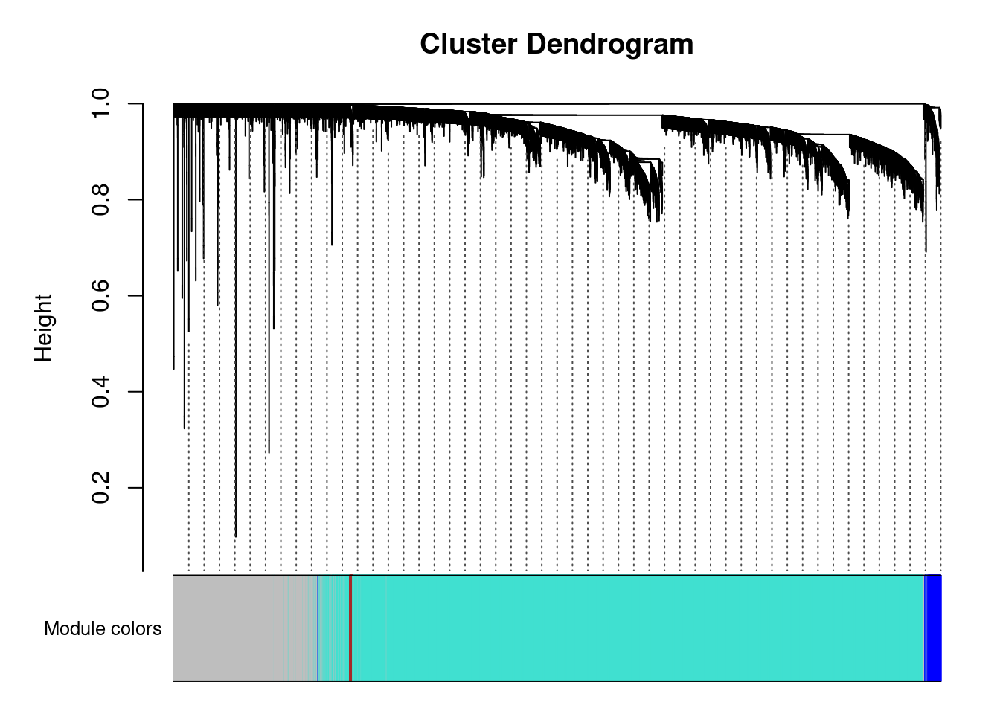

Followed instructions on https://horvath.genetics.ucla.edu/html/CoexpressionNetwork/Rpackages/WGCNA/Tutorials/, which was based on the method used in https://doi.org/10.1371/journal.pgen.0020130
Flagging genes and samples with too many missing values...
..step 1
#check if all genes are ok, not too many missing values for genes or samplesgood.genes$allOK
[1] TRUE
Network Construction
nSets <-4#four datasets, NCD and HFD, male and femalesetLabels <-c("NCD-M","HFHS-M","NCD-F","HFHS-F")multiExpr=vector(mode="list",length=nSets) #create vector with two datasets#filter for only exprerssion data where we have appropriatet phenotype datachow.mice.m <- phenotype.data %>%filter(diet=="chow"&sex=="M") %>%pull(mouse.id)hf.mice.m <- phenotype.data %>%filter(diet=="hf"&sex=="M") %>%pull(mouse.id)chow.mice.f <- phenotype.data %>%filter(diet=="chow"&sex=="F") %>%pull(mouse.id)hf.mice.f <- phenotype.data %>%filter(diet=="hf"&sex=="F") %>%pull(mouse.id)chow.expression.m <- mrna.data[chow.mice.m,] %>% na.omithf.expression.m <- mrna.data[hf.mice.m,] %>% na.omitchow.expression.f <- mrna.data[chow.mice.f,] %>% na.omithf.expression.f <- mrna.data[hf.mice.f,] %>% na.omit# enter data on expression in to multiExpr objectmultiExpr[[1]]=list(data=chow.expression.m)multiExpr[[2]]=list(data=hf.expression.m) multiExpr[[3]]=list(data=chow.expression.f)multiExpr[[4]]=list(data=hf.expression.f) exprSize <-checkSets(multiExpr)gsg <-goodSamplesGenesMS(multiExpr)
Flagging genes and samples with too many missing values...
..step 1
# remove genes with too many missing values or no varianceif (!gsg$allOK){# Print information about the removed genes:if (sum(!gsg$goodGenes) >0)printFlush(paste("Removing genes:", paste(names(multiExpr[[1]]$data)[!gsg$goodGenes], collapse =", ")))for (set in1:exprSize$nSets) {if (sum(!gsg$goodSamples[[set]]))printFlush(paste("In set", setLabels[set], "removing samples",paste(rownames(multiExpr[[set]]$data)[!gsg$goodSamples[[set]]], collapse =", ")))# Remove the offending genes and samples multiExpr[[set]]$data = multiExpr[[set]]$data[gsg$goodSamples[[set]], gsg$goodGenes]; }# Update exprSize exprSize =checkSets(multiExpr)}
Clustering Expression Datasets
#crerate two sample treessampleTrees =list()for (set in1:nSets){ sampleTrees[[set]] =hclust(dist(multiExpr[[set]]$data), method ="average")}#cluster genes in each set, make a hclust tree using "average" methodfor (set in1:nSets)plot(sampleTrees[[set]], main =paste("Sample clustering on all genes in", setLabels[set]),xlab="", sub="", cex =0.7);
# Form a multi-set structure called Traits that will hold the clinical traits.Traits =vector(mode="list", length = nSets);for (set in1:nSets){ setSamples =rownames(multiExpr[[set]]$data); traitRows =match(setSamples, rownames(phenotype.data)); Traits[[set]] =list(data = phenotype.data[traitRows,]);rownames(Traits[[set]]$data) =rownames(phenotype.data[traitRows,]);}collectGarbage();# Define data set dimensionsnGenes = exprSize$nGenes;nSamples = exprSize$nSamples;
The combined dataset includes 11770 genes and 120112123120 samples separated into nSets datasets (NCD-M,HFHS-M,NCD-F,HFHS-F).
# Choose a set of soft-thresholding powerspowers =seq(4,20,by=1)# Initialize a list to hold the results of scale-free analysispowerTables =vector(mode ="list", length = nSets);# Call the network topology analysis function for each set in turnfor (set in1:nSets) powerTables[[set]] =list(data =pickSoftThreshold(multiExpr[[set]]$data,powerVector=powers,verbose =2)[[2]]);
pickSoftThreshold: will use block size 3801.
pickSoftThreshold: calculating connectivity for given powers...
..working on genes 1 through 3801 of 11770
collectGarbage();# Plot the results:colors = color.scheme# Will plot these columns of the returned scale free analysis tablesplotCols =c(2,5,6,7)colNames =c("Scale Free Topology Model Fit", "Mean connectivity", "Median connectivity","Max connectivity");# Get the minima and maxima of the plotted pointsylim =matrix(NA, nrow =2, ncol =4);for (set in1:nSets){for (col in1:length(plotCols)) { ylim[1, col] =min(ylim[1, col], powerTables[[set]]$data[, plotCols[col]], na.rm =TRUE); ylim[2, col] =max(ylim[2, col], powerTables[[set]]$data[, plotCols[col]], na.rm =TRUE); }}# Plot the quantities in the chosen columns vs. the soft thresholding powersizeGrWindow(8, 6)pdf(file ="scaleFreeAnalysis.pdf", wi =8, he =6)par(mfcol =c(2,2));par(mar =c(4.2, 4.2 , 2.2, 0.5))cex1 =0.7;for (col in1:length(plotCols)) for (set in1:nSets){if (set==1) {plot(powerTables[[set]]$data[,1], -sign(powerTables[[set]]$data[,3])*powerTables[[set]]$data[,2],xlab="Soft Threshold (power)",ylab=colNames[col],type="n", ylim = ylim[, col],main = colNames[col]);addGrid(); }if (col==1) {text(powerTables[[set]]$data[,1], -sign(powerTables[[set]]$data[,3])*powerTables[[set]]$data[,2],labels=powers,cex=cex1,col=colors[set]); } elsetext(powerTables[[set]]$data[,1], powerTables[[set]]$data[,plotCols[col]],labels=powers,cex=cex1,col=colors[set]);if (col==1) {legend("bottomright", legend = setLabels, col = colors, pch =20) ; } elselegend("topright", legend = setLabels, col = colors, pch =20) ;}dev.off();
pdf
2
network.power <-15#based on the max SFT R2 maximumnet <-blockwiseConsensusModules( multiExpr, power = network.power, minModuleSize =30, #default is 20, tutorial said 30deepSplit =2, #defaultmaxBlockSize =ncol(mrna.data), #total number of genespamRespectsDendro =FALSE, mergeCutHeight =0.25,numericLabels =TRUE,minKMEtoStay =0.1, #default is 0.2, tutorial said 0.1saveTOMs =TRUE, verbose =1)
Calculating consensus modules and module eigengenes block-wise from all genes
Calculating topological overlaps block-wise from all genes
Constructed modules with 15 soft-thresholding power, based on the visualization of the soft-thresholding power \(R^2\).
Plotting Samples Clustered by Consensus Modules
consMEs = net$multiMEsmoduleLabels = net$colors# Convert the numeric labels to color labelsmoduleColors =labels2colors(moduleLabels)consTree = net$dendrograms[[1]]# Convert labels to colors for plottingmergedColors =labels2colors(net$colors)# Plot the dendrogram and the module colors underneathplotDendroAndColors(net$dendrograms[[1]], mergedColors[net$blockGenes[[1]]],"Module colors",dendroLabels =FALSE, hang =0.03,addGuide =TRUE, guideHang =0.05)

# Convert labels to colors for plottingmergedColors =labels2colors(net$colors)MEs = net$MEs;geneTree = net$dendrograms[[1]];
Output
Wrote this out to read in in the script Liver-WGCNA-Cholesterol.Qmd